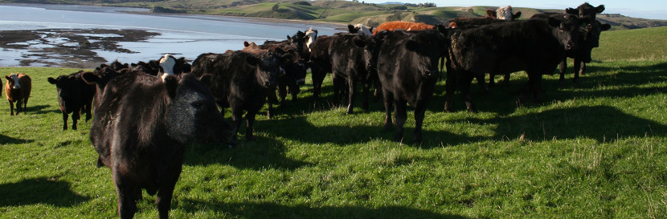
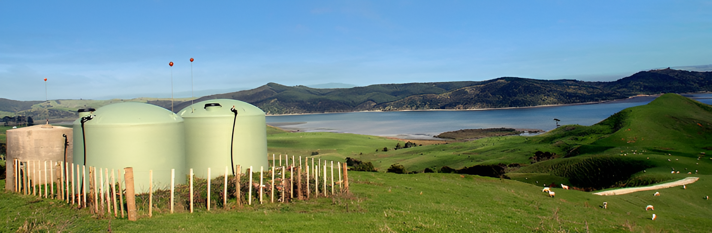
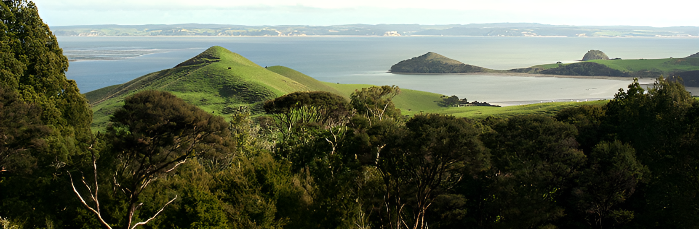
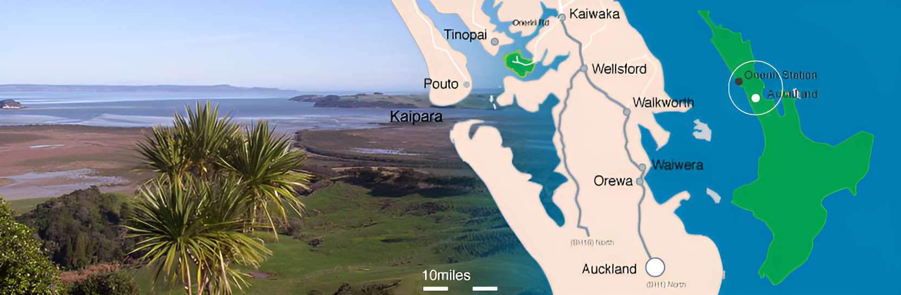

LIVESTOCK
The farm has a breeding cow mob of 850 and a ewe flock of 6500. All stock are finished on the property.
Cattle:
The breeding cow herd is predominately Angus with some Angus Hereford cross. The heifer progeny are finished before 30 months of age at 240kg+, other than replacements. All the male calves are steered and finished before 3 years at 300kg+. All the homebred cattle on the farm are sold under Angus programmes where possible. The aim is to have a pure Angus is Angus with a predominately Perendale ewe flock. We are currently changing the ewe flock to Romney Genetics with a target of 10,000 ewes and easing cow numbers calving to 750. All stock finished on the property.
Sheep Policy:
The ewe flock is predominately Perendale with is currently moving to Romney with a targeted lambing of 140%. The Romney's are bred for natural worm resistance and Facial Eczema tolerance. They will produce a pure white mid micron fleece. All lambs finished on property other than replacements.

DEVELOPMENT
New Sub-divisions of 1,000 hectares into 8-10 ha paddocks are progressively underway. These will be further intensified into 1 ha cells on parts of the farm.
An extensive capital fertiliser programme is underway to lift soil fertility levels and drive future pasture production.
The farm has an extensive reticulated water supply fed from artesian bores which currently covers most of the farm The aim is to further develop the reticulated scheme to provide water to the entire farm.
Re-grassing is under way of 100 hectares per annum in perennial ryegrass. Target is to renovate 1,000 hectares into perennial ryegrass over the next 10 years. Break crops of Italian ryegrass and pasja are being used in this process.

LANDCARE
Oneriri Station is committed to protecting and fostering the growth of indigenous forest, fauna and birdlife on the Peninsula. Oneriri Station is a member of the Oneriri Peninsula Landcare Group, a partnership between the four landowners that occupy the Peninsula and the Northland Regional Council. The objective is to create safe and sustainable indigenous forests that will allow native species of flora, fauna and birds to flourish. To this end a successful pest control program was completed in November 2005 to reduce numbers of possums, rats, cats and mustelids to very low levels. A dramatic improvement in forest new growth is evident along with higher levels of bird sightings.
